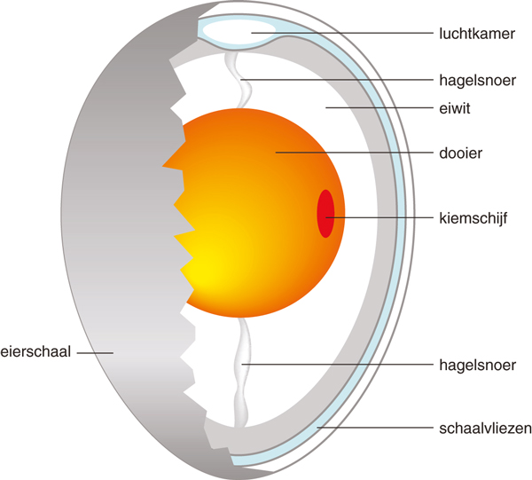

|

|
Vragen:
Wanneer is een ei wit en wanneer bruin?
Is er verschil tussen die eieren?
Op een vers ei uit de winkel staat een nummer.
Wat betekent dat nummer?
Hoe kun je nagaan of een ei gekookt is?
Hoe kun je nagaan of een ei vers of 'oud' is?
Hoe lang moet je een 'hardgekookt' ei koken?
Hoe kun je een ei nog meer bereiden?
Wat is een 'broedei'?
Wat komt er uit een 'broedei' na succesvol uitbroeden?
|